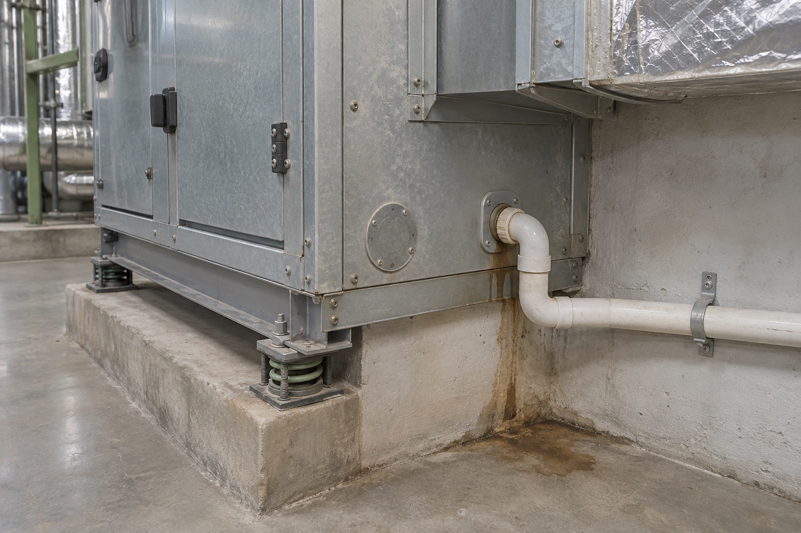

HVAC · AHU 03
Marina House · Floor 3
6 hrsB. Peters
For facility managers and building maintenance teams. Brickwise groups repeated defects in photos, reads technician notes and suggests which issues need a qualified inspection first.
 BUILDING OPERATIONS / LICENSED PHOTOGRAPHY
BUILDING OPERATIONS / LICENSED PHOTOGRAPHYReview the image and the technician note before selecting a repair.
06 HOURS / ESTIMATED WORKMarina House · Floor 3
Marina House · Core B
Ikeja Exchange · Floor 2
Ikeja Exchange · Plant
Wuse Court · Ground
Garki Place · Suite 8

An image cannot certify structural or equipment safety. A qualified professional inspects the condition and approves the work.

An image cannot certify structural or equipment safety. A qualified professional inspects the condition and approves the work.
Group the images and notes by building and asset.
Inspection photos, thermal images and technician notes
REVIEWED OUTPUTA grouped defect list and draft work orders
Filter the supplied inspection records by review state. Open an item to inspect its source note before using the full workspace.
Read the observation and its owner before taking the next step.
Explore the review desk and follow the evidence behind each finding.

Inspection illustration · source observation below
An image cannot certify structural or equipment safety. A qualified professional inspects the condition and approves the work.
Evidence-linked cases, retained reports, downloads and an operational register are implemented. Azure OpenAI and OpenAI service adapters are available; connected analysis requires a configured deployment.
Follow the development stagesAgree the baseline and review the result with the person responsible for the work.
Compare grouped findings with the manager’s approved asset-level issue list.
Track confirmed observations, missed defects and cases needing more evidence.
Include the qualified review and preparation of an actionable work item.
Compare two time assumptions for inspection packs. The estimate is calculated from your entries; it is not a measured customer result.
An image cannot certify structural or equipment safety. A qualified professional inspects the condition and approves the work.